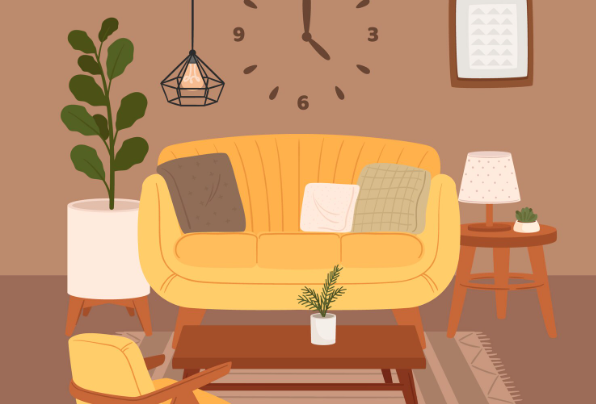
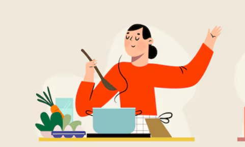
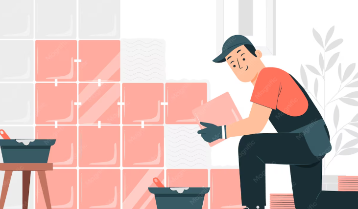
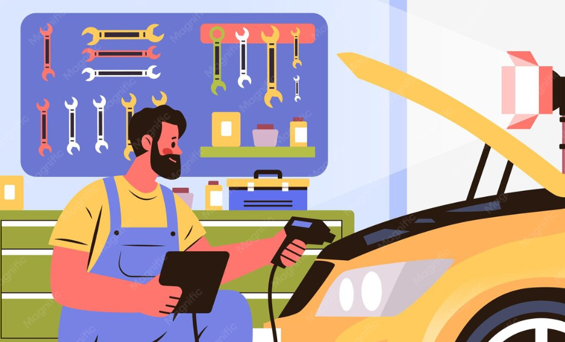

무료 이용
경기도일자리재단에서 제공하는 공공 서비스로, 도민 누구나 비용 부담 없이 이용할 수 있습니다.
보내드림만의 3가지 특별함을 만나보세요
경기도일자리재단에서 제공하는 공공 서비스로, 도민 누구나 비용 부담 없이 이용할 수 있습니다.
재단에서 직접 운영하는 직업교육훈련을 정식으로 이수한 전문가만 매칭되어 안심하고 이용하실 수 있습니다.

수료생은 재단으로부터 활동수당을 지원받아 실전 직무경험을 쌓고, 도민은 품질 높은 서비스를 받는 상생 모델입니다.
간단한 3단계로 편리하게 서비스를 이용하세요
필요한 서비스 분야를 선택해 주세요. 10가지 전문 분야에서 원하는 서비스를 찾을 수 있어요.
간단한 신청서를 작성하여 접수해 주세요. 언제 어디서 어떤 도움이 필요한지 알려주시면 됩니다.
재단 담당자가 적합한 수료생을 선정하여 연락을 드립니다. 빠르고 정확하게 연결해 드려요.
집과 시설, 디지털과 콘텐츠 분야에서 교육 수료생이 대기 중입니다
벽면과 공간 분위기를 새롭게 바꾸고 싶을 때
가용 인력 32명신청하기집과 매장을 더 편리하고 보기 좋게 꾸밀 때
가용 인력 18명신청하기냉난방기 설치와 점검이 필요할 때
가용 인력 8명신청하기칠이 벗겨졌거나 누수 예방이 필요할 때
가용 인력 6명신청하기물 사용 설비와 배관 점검이 필요할 때
가용 인력 12명신청하기가구 조립이나 목공 보수가 필요할 때
가용 인력 10명신청하기타일 시공과 줄눈 보수가 필요할 때
가용 인력 14명신청하기문과 창문의 수리나 교체가 필요할 때
가용 인력 16명신청하기콘센트, 스위치, 조명 설치가 필요할 때
가용 인력 9명신청하기금속 제작과 보강 작업이 필요할 때
가용 인력 15명신청하기실제 이용자들이 전하는 생생한 이야기

★★★★★
★★★★★
★★★★★

★★★★★

★★★★☆

★★★★★
★★★★★
★★★★★
보내드림 서비스 이용에 대해 궁금한 점을 확인해 보세요
네, 경기도일자리재단이 운영하는 공공 서비스로 도민은 전액 무료로 이용하실 수 있습니다.
재단 협약기업, 시·군 소속 공공기관, 경기도민 누구나 신청하실 수 있습니다.
신청 접수 후 재단 담당자가 적합한 수료생을 매칭하여 연락드립니다.
직업교육훈련 과정을 정식으로 이수한 교육 수료생으로, 각 분야별 전문 교육을 받은 분들입니다.
경기도 전 지역에서 이용 가능하며, 세부 지역은 신청 시 안내받으실 수 있습니다.